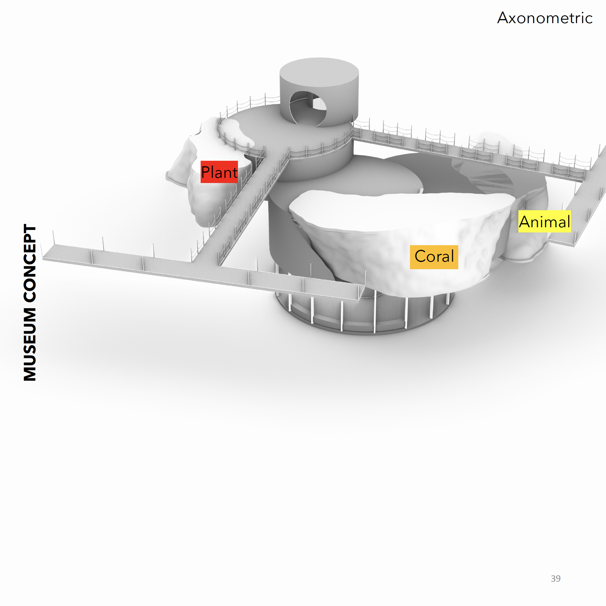
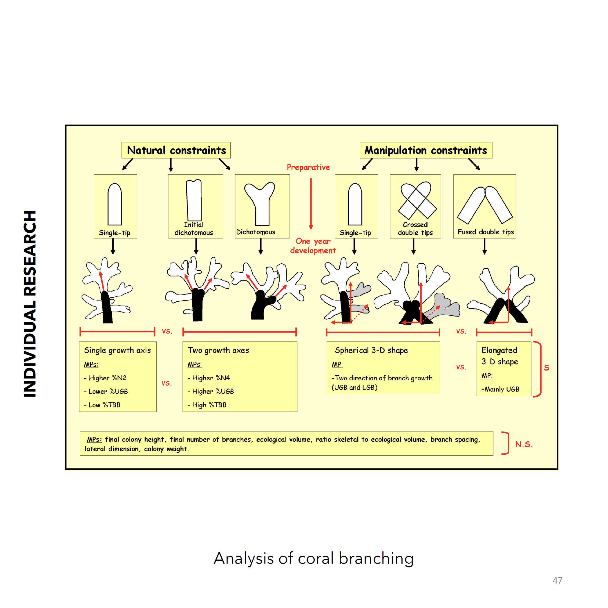

Project
Marine Memoirs
Envisioning future worlds in the anthropocene with Unreal Engine üêü
Categories
Architecture | Environment

Project Description
In this studio, we were tasked to design a “Museum of Memory” set in a future scenario where people will go to (re)member, (re)collect and (re)construct their ‘past’ in order to make meaning out of present and project to future. The project was a collective assemblage of memories of the society in the future. The main focus of the studio was the Environmental, Cultural and Psychological Aftermath of Climate change in year 2200. We investigated current pressing environmental issues of today and their effects on the future civilisations and environment from a perspective of speculative narratives. The studio collectively built the scenario of ‘living on/under the ocean’, with geographical conditions set as hideaways for the future civilisations to survive, seek protection and strive. We explored the definition of ‘Museum as a heterotopia’ in our cultural context as well as how to archive as a way to connect our collective and individual history and keep record of our present for the future.
“The archive as the privileged place for the experience of this temporal displacement is the archive as heterotopia; in this respect, archives are collections of time slices, of anonymous language; places of different experiences, for experimentations, and places that might permit the creation of different pasts, traditions or individualities. Of a double nature, archives are at the same time that which produces and reproduces the well-known and familiar and that which allows for ruptures and breaks with the past and the advent of something new. The archive creates, and it is created.” ~Ove Eliassen Knut, The Archives of Michel Foucault
Introduction
It is Year 2200, and we finally did it. We destroyed the Earth, slowly but steady until there was no ground left to stand on, no fresh air to breathe. In the aftermath of Climate Change and Anthrophocene, the Earth has transformed to a new being. The land has diminished to the seas. We, as whatever is left of humanity, are forced to live on/under the ocean, away from the lands that we once called ‘home’. Physical mobility is restricted to minimum. It is a world where humans are trapped between the virtual and the real underwater. Boundaries are blurred. Experiences are neither nor. Nations have dissolved, societies have diminished to thin air. Civilisation as we know it ceased to exist along with its cities and all our possessions. We are forced to rely on our Memories as a civilisation. Our collective memory is what connects us to our previous selves and to our futures. It is the only record of our past, for today and future.
Contents
World Building · Site Design · Museum Concept · Physical Model · Plan · Section · Axonometric · Circulation · Individual Research · Reading Responses





